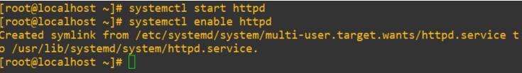

Instalar un servidor web en Linux utilizando Apache
Instalación
Procedemos a instalar nuestro servicio httpd que corresponde al servicio de Apache, cabe destacar que la instalación se realizará en CENTOS 7, para instalar el servicio ejecutamos el siguiente comando:
yum -y install httpd

Como esto no es un serv en producción vamos a deshabilitar selinux en este caso, este proceso no es recomendable realizarlo en entornos reales, los comando que utilizaremos son los siguientes.
setenforce 0
sed -i 's/enforcing/disabled/' /etc/sysconfig/selinux
sed -i 's/enforcing/disabled/' /etc/selinux/config
Ahora vamos abrir los puertos en nuestro en firewall, en nuestro caso como es un servidor web abriremos los puertos 80, 443, haremos uso del siguiente comando.
firewall-cmd --permanent --add-port=80/tcp
firewall-cmd --permanent --add-port=443/tcp
firewall-cmd --reload

El siguiente paso seria configurar apache para que inicie con el sistema, para esto tenemos que iniciar el servicio y luego pasar el parametro de enable.
systemctl start httpd
systemctl enable httpd

Creación de directorios
Ya que tendremos una configuración basada en VirtualHost, debemos crear el directorio el cual será manejado por el VirtualHost.
mkdir -p /var/www/nombre_de_tu_directorio # EJEMPLO mkdir -p /var/www/jamiel/public_html
Ahora ya que tenemos el fichero creado tendremos que asignar el usuario Apache como dueño de dicho directorio, y para lograr esto utilizaremos los siguientes comandos.
chown -R apache. /var/www/
chmod -R 755 /var/www/tu_directorio # EJEMPLO: chmod -R 755 /var/www/jamiel/

Ahora vamos a configurar los directorios que manejaran los VirtualHost.
mkdir /etc/httpd/sites-available
mkdir /etc/httpd/sites-enabled
Configurar .conf del VirtualHost
Accederemos al directorio sites-available y crearemos un archivo .conf, con el nombre preferiblemente del directorio que contiene todo lo referente a la web.
cd /etc/httpd/sites-available/
nano {nombre_de_tu_gusto.conf} # EJEMPLO: nano jamiel.conf
# Dentro del archivo lo siguiente
<VirtualHost *:80>
ServerName {IP O DOMINIO}
DocumentRoot /var/www/{nombre de tu dir} # EJEMPLO: DocumentRoot /var/www/jamiel/public_html
ErrorLog /var/www/{tu dir}/error.log # EJEMPLO: ErrorLog /var/www/jamiel/error.log
CustomLog /var/www/{tu dir}/access.log combined
</Virtualhost>
Creado todo esto crearemos un enlace simbólico hacia el sites-enable, esto lo haremos aplicando el siguiente comando.
ln -s /etc/httpd/sites-available/{tu file}.conf /etc/httpd/sites-enabled/{tu file}.conf

Como último paso de esta conf solo nos queda reiniciar el servicio http.
systemctl restart httpd.service
Accedemos a la web y vemos que si hemos realizado los pasos correctamente todo funciona a la perfección.